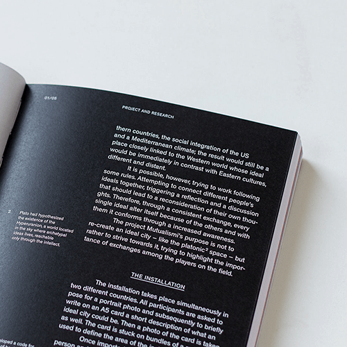
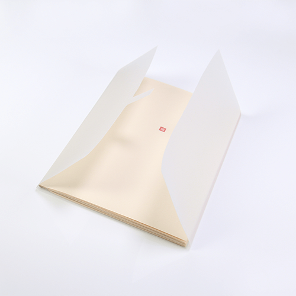

空舍,为客户提供全方位的商业空间与品牌形象打造,致力于探索传统东方美学与现代设计语言融合的新视觉。希望通过对设计表达的思考和实践,将“艺术和美的象征符号解构提炼,并在现代语境中加以表达,予室內空间“情怀"的属性,让艺术”和“美的东西能更好地被大众接受、传播与传承

李金良
空舍设计创始人
空舍设计创始人
设计并不是无中生有的创造,而是将我们的见闻打碎重构,熟悉的东西陌生化,用好奇的眼光重新审视它,提取其可以与人达成情感互动的元素,并将它重新寄放在空间中,让空间也变得柔软起来。

王民勤
空舍设计合伙人
空舍设计合伙人
好的东西都是经得起时间的考验的,设计亦是如此,传统美学即是可供不断采掘的宝藏,我们要做的只是发现它,洗掉它的灰尘,然后把它放在适当的位置就好。
李金龙
空舍设计合伙人
空舍设计合伙人
物质之后的是精神,成本和效率让我们所用的、所体验的趋同,人作为一个人的被尊重需求多被漠视。设计或许是让我们所看到的变得更美好听到的变得更悦耳,经历的变得更温暖的好办法。
冯立宇
平面设计总监
平面设计总监
出生在90年代的我们,既继承了中国传统美学的精神,又充满着对未来可能性的憧憬,致力于建立中国传统文化和现代设计融合的新语言,尝试以各种面貌的可能引起新时代消费者的注意。